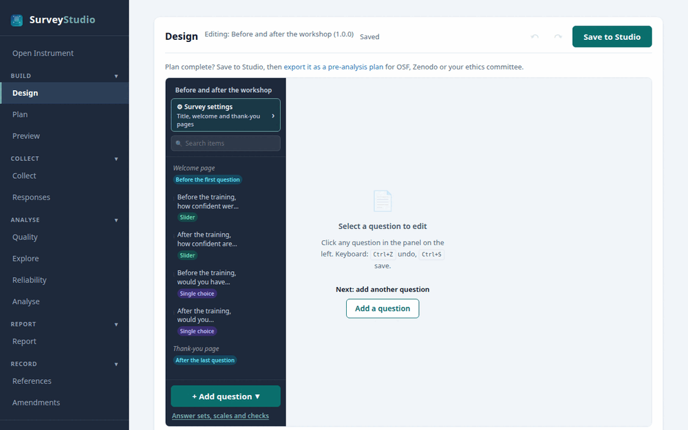

SurveyStudio is surveyframe’s visual workspace. It opens from RStudio, so the setup has 3 parts: R, RStudio and the surveyframe package. All 3 are free. Setup takes about 15 minutes the first time.
What you need
- A computer running Windows, macOS or Linux, with permission to install software.
- An internet connection for the installation.
1. Install R
Download R for your system from CRAN and run the installer with its default settings.
2. Install RStudio
Download RStudio Desktop from Posit and run the
installer. Then open RStudio. Its window has a pane named
Console, usually at the bottom left, with a
> prompt.
3. Install surveyframe
Click in the Console beside the > prompt, paste this
line and press Enter:
install.packages("surveyframe")R downloads surveyframe and the packages it uses. This takes a few
minutes. The installation has finished when the > prompt
returns. The Addins menu in RStudio’s toolbar now lists
the surveyframe commands.
4. Open an example study
In RStudio, open the Addins menu, choose surveyframe: Try a demo and pick a study. It opens in SurveyStudio on the Design screen, with its questionnaire, analysis plan and demonstration responses loaded, so every stage has something to show.

5. Start your own study from a template
Each questionnaire template has a download the instrument (.sframe) link. To make it your own study:
- Download the
.sframefile from the template page and save it in your project folder. - In RStudio, open the Addins menu and choose surveyframe: Open analysis workspace.
- In SurveyStudio’s left menu, choose Open Instrument, then Browse .sframe file, and select the file.
- On the Design screen, edit the title, the questions and the answer options for your study. Choose Plan to adapt the research questions, then press Save to Studio.
- On the Report screen, press Download copy to save
your study as a new
.sframefile. If SurveyStudio offers Save as a new instrument, tick it, since your study starts a new record. This is the file to keep, share with your supervisor and use to collect responses.
The downloaded template has no responses. Your own responses arrive once you collect them, as Run a study in SurveyStudio shows.
What next
- Questionnaire templates, grouped by field.
- Run a study in SurveyStudio: the 5 stages with screenshots, by point and click.
- Run a study in R: the same stages in R code.
- Frequently asked questions.